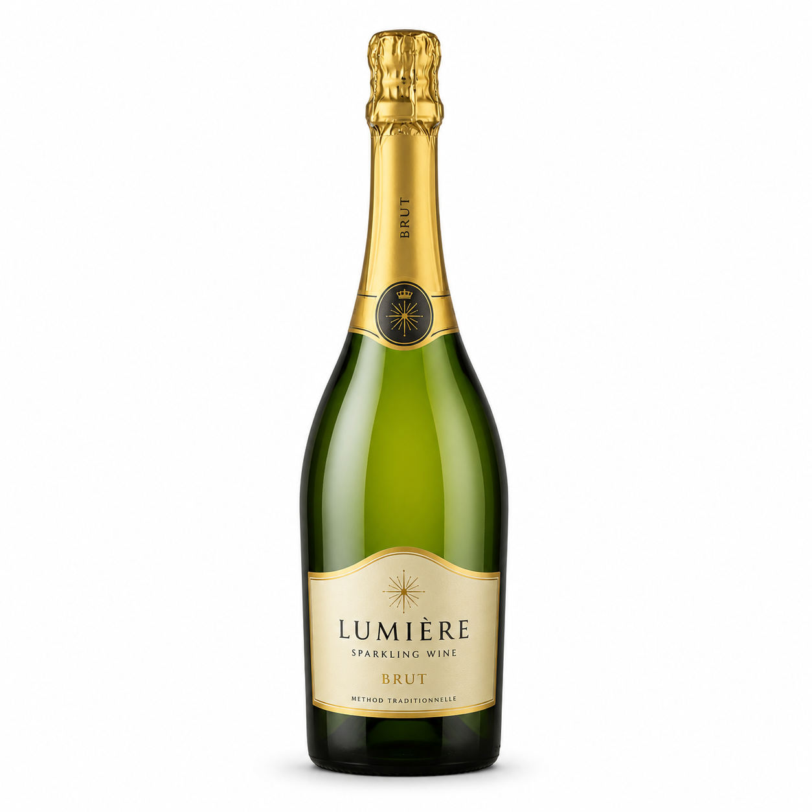

Sparkling Wine · France
Saint Hilaire Blanquette de Limoux
For me, this is a fresh and elegant sparkling wine that feels easy to enjoy. I like its crisp style, fine bubbles and soft fruity notes. It is the kind of bottle I would choose for a warm evening, a relaxed aperitif or a small celebration without making it feel too serious.
France
750ml
12.5%
92 Points
Chardonnay
Chenin Blanc
Mauzac
View wine